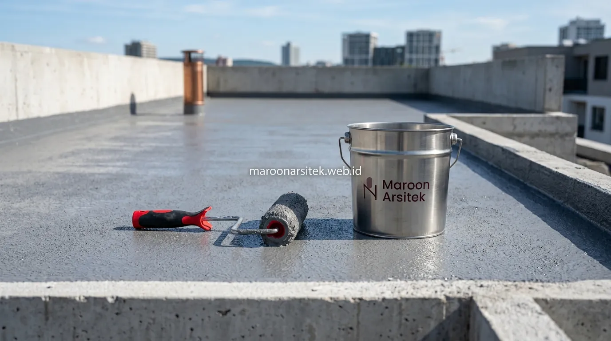

Memiliki rumah tinggal di Jakarta yang telah berusia puluhan tahun sering kali memunculkan berbagai tantangan kenyamanan, mulai dari atap bocor menahun, dinding berjamur, hingga tampilan fasad yang mulai usang dan ketinggalan zaman. Menggunakan layanan jasa renovasi rumah yang terencana memungkinkan Anda mentransformasi hunian lama menjadi rumah modern yang kokoh dan estetik tanpa harus mengeluarkan biaya sebesar bangun baru dari nol.
Solusi Mengatasi Rumah Lama yang Sering Bocor dan Lembap
Rumah lama yang sering bocor dan lembap umumnya disebabkan oleh lapisan waterproofing pada atap dak beton atau talang yang sudah menurun fungsinya seiring usia bangunan. Penanganan yang tepat perlu menyasar sumber kebocoran, bukan hanya menutupi gejalanya di permukaan.
- Pemeriksaan menyeluruh pada area dak beton, talang, dan pertemuan atap: Bertujuan menemukan titik retakan atau penurunan level kemiringan air secara akurat.
- Pengelupasan lapisan waterproofing lama: Lapisan lama yang sudah mengelupas atau getas harus dibersihkan tuntas sebelum aplikasi lapisan baru, agar daya rekat material tetap optimal.
- Aplikasi sistem waterproofing berstandar: Penggunaan sistem membran bakar atau coating polimer elastis berkualitas tinggi disesuaikan dengan intensitas genangan air pada area tersebut.
- Perbaikan kemiringan talang air (grading): Mengatur ulang sudut kemiringan talang agar air hujan deras mengalir lancar ke pipa pembuangan tanpa meninggalkan genangan.
- Pengecekan pipa instalasi plumbing dalam dinding: Memastikan dinding lembap bukan disebabkan oleh kebocoran pipa air bersih atau air kotor yang tertanam di balik dinding bata.
Penanganan menyeluruh semacam ini sangat penting karena perbaikan yang hanya menutup permukaan tanpa mengatasi sumber kebocoran cenderung membuat masalah kembali muncul dalam waktu singkat setelah musim hujan berikutnya.

Solusi Mengatasi Retak Rambut pada Dinding dan Plafon Rumah Lama
Retak rambut pada dinding dan plafon rumah lama dapat bersifat kosmetik akibat penyusutan plesteran maupun mengindikasikan pergerakan struktur ringan. Penanganannya perlu disesuaikan dengan penyebab yang sebenarnya agar tidak berulang di kemudian hari.
- Identifikasi pola retakan: Membedakan retak akibat penyusutan plester biasa dengan retak struktural diagonal yang mengikuti sambungan kolom dan dinding bata.
- Penggunaan compound elastis khusus: Mengisi celah retak rambut dengan bahan pengisi fleksibel yang mampu meredam pergerakan termal bangunan tanpa retak kembali.
- Pemasangan mesh penguat serat (fiberglass mesh): Dipasang pada area pertemuan antara dinding bata dan kolom beton bertulang yang rawan mengalami pergeseran sambungan.
- Evaluasi kelembapan sekitar retakan: Mengecek apakah retakan dipicu oleh resapan air talang yang melemahkan ikatan semen plesteran.
- Pengecatan ulang elastomeric: Menggunakan cat eksterior/interior elastis bermutu tinggi yang memiliki elastisitas tinggi untuk menjembatani retak mikro di masa depan.
Penanganan retak rambut yang hanya mengandalkan pendempulan dan pengecatan ulang tanpa mengatasi penyebab pergerakan material umumnya hanya bertahan sementara, sehingga retak yang sama berpotensi muncul kembali pada pergantian musim.
Transformasi Fasad Rumah Lama Menjadi Tampilan Modern
Pembaruan fasad menjadi salah satu bagian renovasi yang memberikan perubahan visual paling terlihat tanpa harus membongkar struktur utama rumah, sehingga relatif efisien dari sisi waktu dan biaya dibanding renovasi total. Anda bisa mengombinasikannya dengan perencanaan dari tim jasa arsitek kami untuk hasil visual yang maksimal.
- Penggantian material dinding luar: Mengombinasikan cat warna netral modern, aksen batu alam, travertine, atau kisi-kisi kayu sintetis (WPC) untuk menciptakan kesan mewah dan elegan.
- Pembaruan kanopi carport dan pagar rumah: Mengganti rangka kanopi lama dengan struktur baja hollow minimalis dan atap solarflat atau tempered glass.
- Pemasangan secondary skin: Menambahkan kisi-kisi aluminium atau perforasi logam untuk mempercantik tampilan fasad sekaligus mereduksi panas matahari langsung ke dalam ruangan.
- Penataan pencahayaan arsitektural (architectural lighting): Menempatkan lampu sorot dinding (up-down wall lamp) dan strip LED warm white yang mempertegas tekstur fasad pada malam hari.
- Penyelarasan teras depan dan lantai carport: Mengganti keramik lama dengan homogenous tile anti-slip atau batu andesit berpola rapi.
Perubahan fasad semacam ini umumnya dapat dikerjakan dalam waktu yang jauh lebih singkat dibanding renovasi struktural, karena sebagian besar pekerjaan berada pada lapisan luar bangunan tanpa mengganggu aktivitas penghuni di dalam rumah secara signifikan.
Renovasi Total untuk Rumah dengan Kerusakan Struktur atau Tata Ruang Tidak Fungsional
Sebagian rumah lama memerlukan renovasi total ketika kerusakan sudah menyentuh elemen struktural atau tata ruang eksisting sudah tidak lagi sesuai kebutuhan keluarga saat ini, misalnya jumlah kamar tidur yang kurang, plafon yang terlalu rendah, atau sirkulasi udara yang pengap.
- Evaluasi dan audit kelayakan struktur: Menentukan bagian kolom, balok, dan pondasi yang masih kuat dipertahankan serta bagian yang wajib dibongkar atau diperkuat.
- Redesain tata ruang berkonsep open-plan: Menggabungkan ruang keluarga, ruang makan, dan dapur bersih untuk menciptakan kesan lapang dan sirkulasi udara silang (*cross ventilation*). Simak inspirasinya pada artikel 12 ide desain rumah minimalis modern.
- Perkuatan pondasi dan struktur bertingkat: Melakukan penambahan *cakar ayam* atau *strauss pile* saat melakukan penambahan lantai dari 1 lantai menjadi 2 lantai.
- Pembaruan total instalasi listrik dan plumbing: Mengganti kabel listrik lama dengan kabel berstandar SNI berdaya cukup serta meremajakan seluruh pipa saluran air bersih dan kotor.
Renovasi total memerlukan perencanaan dan estimasi biaya RAB yang matang dibanding renovasi parsial, karena melibatkan proses pembongkaran sebagian bangunan sebelum konstruksi baru dapat dimulai.
Proses Renovasi Rumah dari Survei hingga Serah Terima
Proses renovasi rumah yang terstruktur di Maroon Arsitek dimulai dari survei kondisi bangunan secara menyeluruh, sehingga rencana perbaikan yang disusun benar-benar sesuai dengan kondisi nyata di lapangan, bukan hanya perkiraan di atas kertas.
- Survei Kondisi Lapangan: Tim teknis kami datang langsung ke lokasi rumah Anda di Jakarta untuk memeriksa tingkat kerusakan fisik, kelembapan dinding, dan kondisi utilitas.
- Penyusunan Desain & RAB Transparan: Kami menyusun gambar konsep renovasi beserta rincian Rencana Anggaran Biaya (RAB) yang transparan sesuai skala prioritas kebutuhan Anda.
- Penandatanganan Kontrak Kerja: Memuat rincian spesifikasi material, jadwal kerja (timeline), tahapan termin pembayaran, dan klausul garansi tertulis.
- Pelaksanaan & Pengawasan Berkala: Pekerjaan konstruksi dieksekusi oleh tim tukang berpengalaman di bawah pengawasan rutin pengawas proyek (*site supervisor*).
- Pemeriksaan Akhir & Serah Terima Kunci: Uji fungsi menyeluruh (bebas bocor dan rapi) sebelum serah terima resmi serta penyerahan sertifikat garansi pemeliharaan.
Cakupan Layanan Renovasi Rumah di Jakarta dan Sekitarnya
Layanan renovasi rumah Maroon Arsitek melayani seluruh wilayah Jakarta Selatan, Jakarta Barat, Jakarta Pusat, Jakarta Timur, Jakarta Utara, hingga kawasan penyangga Jabodetabek (Bogor, Depok, Tangerang, dan Bekasi). Kami menangani renovasi ringan seperti perbaikan atap bocor, renovasi fasad, hingga renovasi total rumah mewah dan bangunan komersial.
Setiap proyek renovasi di Jakarta ditangani dengan pendekatan survei lapangan langsung agar rencana kerja benar-benar sesuai dengan kondisi bangunan yang berbeda-beda pada tiap rumah.